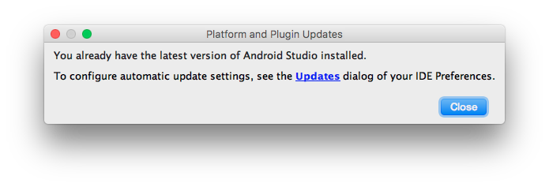

Problem: x ist Moppelkotze
Schritt 1.5: Android Studio updaten

Schritt 2: Wild drauflosbauen
Schritt 3: Keine Ahnung haben
Schritt 4: Code 1:1 in Android Studio pasten
Schritt 5: Statt einer Live-Vorführung das KBS mit Folien machen
Noch Fragen?
4kraemer@inf